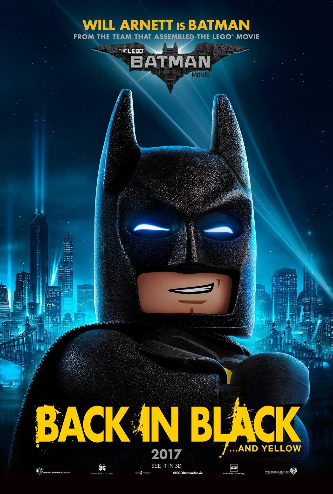

Diretor: Chris McKay
Com: Will Arnet, Michael Cera
Gênero: Animação, ação, aventura, comédia
Censura: livre
Tempo de duração: 104 min
Sinopse: Há grandes mudanças se formando em Gotham City, e se ele quiser salvar a cidade da aquisição hostil do Coringa, Batman pode ter que largar a coisa de vigilante solitário, tentar trabalhar com os outros e talvez, apenas talvez, aprender a relaxar.